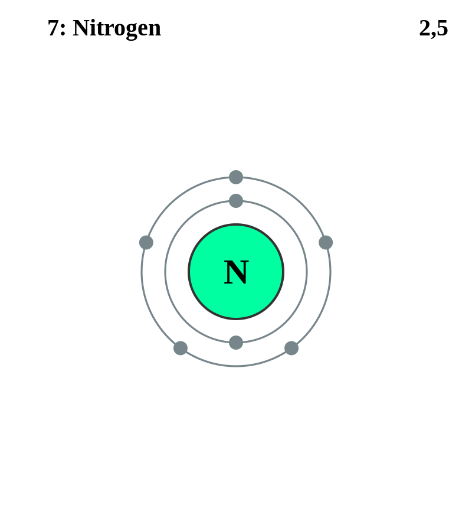

Basic Information about the element
Basic Information about the element
Name: Nitrogen
Symbol: N
Atomic Number: 7

1s2 2s2 2p3
The chemical element nitrogen is classed as a gas and a nonmetal.
It was discovered in 1772 by Daniel Rutherford and independently by Carl Scheele.
| Number of Protons/Electrons: | 7 |
| Number of Neutrons: | 7 |
| Atomic Mass: | 14.00674 amu |
| Melting Point: | -209.9 °C (63.250008 K, -345.81998 °F) |
| Boiling Point: | -195.8 °C (77.35 K, -320.44 °F) |
| Classification: | Nonmetal |
| Uses: | forms most of atmosphere |